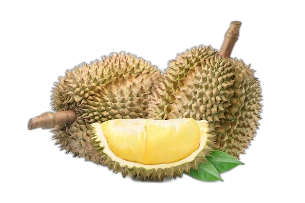
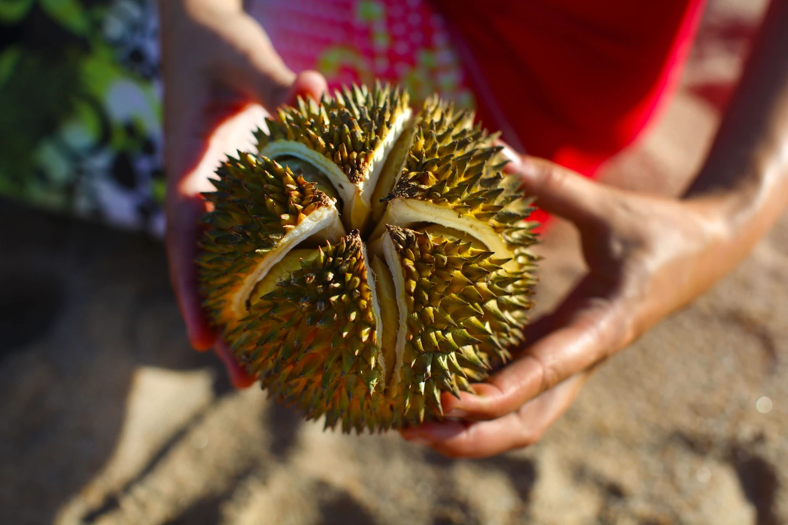

Truy xuất nguồn
Truy xuất nguồn
gốc sầu riêng
Truy xuất nguồn gốc thực phẩm đang được phát triển và áp dụng rộng rãi trong ngành công nghiệp thực phẩm để đảm bảo tính an toàn và chất lượng sản phẩm đến tay người tiêu dùng.
Khám phá

Khám phá
Tại sao nên sử dụng ứng dụng truy xuất nguồn gốc thực phẩm
Truy xuất nguồn gốc thực phẩm là quá trình tìm hiểu và theo dõi các thông tin liên quan đến quá trình sản xuất, chế biến, vận chuyển, lưu trữ và phân phối của một sản phẩm thực phẩm đến tay người tiêu dùng.
Đảm bảo an toàn, chất lượng và độ tin cậy của sản phẩm.
Giảm thiểu rủi ro về sức khoẻ.
Tăng cường niềm tin người tiêu dùng vào sản phẩm.
Hoàn tiền 100% nếu có sai sót.
Quy trình
truy xuất
01
Chọn giống cây
Sầu riêng được trồng, chăm sóc và thu hoạch từ các trạng thái hoặc khu vực sản xuất đặc biệt.
02
Chế biến & đóng gói
Sầu riêng được vận chuyển đến các cơ sở chế biến để đóng gòi và bảo quản.
03
Vận chuyển
Sầu riêng được vận chuyển đến các điểm bán và phân phối trên khắp quốc gia và thế giới.
04
Bán & phân phối
Sầu riêng được bán và phân phối đến các siêu thị, chợ và cửa hàng tạp hoá trên toàn quốc và thế giới.
05
Mua hàng
Người tiêu dùng mua hàng từ các cửa hàng và siêu thị hoặc đặt hàng trực tuyến.
06
Vận chuyển đến tay người dùng
Sản phẩm được vận chuyển đến tay người tiêu dùng thông qua các dịch vụ giao hàng hoặc được lấy trực tiếp từ cửa hàng bán lẻ.
Một số sản phẩm của chúng tôi
Dưới đây là một số loại sầu riêng nổi tiếng và
được đánh giá cao nhất tại Lâm Đồng.
Sầu riêng Thái
100.000 - 140.000 đồng/kgSầu riêng Musang King
400.000 - 500.000 đồng/hộp 400gSầu riêng ruột đỏ
86.000 - 200.000 đồng/kgSầu riêng Cái Mơn
135.000 đồng/kgSầu riêng khổ qua
120.000 - 130.000 đồng/kgNhững câu hỏi thường gặp
Làm sao để thiết lập hệ thống truy xuất nguồn gốc?
Hệ thống truy xuất nguồn gốc sẽ được đưa vào quy trình sản xuất của doanh nghiệp, từ đó các mắt xích sẽ giám sát và có trách nhiệm với sản phẩm của mình. Nếu xảy ra lỗi ở công đoạn sản xuất doanh nghiệp sẽ yêu cầu sửa lỗi kịp thời trước khi bán sản phẩm ra thị trường.
Bộ Nông nghiệp và Phát triển nông thôn có yêu cầu truy xuất nguồn gốc sản phẩm không?
Đối tượng áp dụng truy xuất nguồn gốc bao gồm cơ sở sản xuất, kinh doanh thực phẩm có nguồn gốc. Bộ Nông nghiệp và Phát triển nông thôn ban hành Quy định về truy xuất nguồn gốc và thu hồi sản phẩm không đảm bảo chất lượng và an toàn thực phẩm.
Thông qua mã QR truy xuất nguồn gốc có phát hiện được hàng giả không?
Mỗi loại thực phẩm sẽ có một mã QR riêng, có tích hợp tính năng chống giả. Người tiêu dùng hoàn toàn có thể xác thực được toàn bộ thông tin của sản phẩm.
Sầu riêng được truy xuất nguồn gốc được định danh như nào?
Việc định danh có thể theo ba mức định danh sau: định danh loại sản phẩm, định danh theo lô và định danh theo đơn vị.
Làm thế nào để đối phó với các bản sao giả và hàng nhái theo trên thị trường?
Chúng tôi sử dụng những tem chống giả do Vina CHG cung cấp hỗ trợ hiệu quả công tác điều tra và xử lý hàng nhái.
Truy xuất nguồn gốc sản phẩm có tầm quan trọng như nào trong ngành công nghiệp thực phẩm?
Đảm bảo chất lượng sầu riêng khi đến tay người tiêu dùng. Liên tục cải tiến chuỗi sản xuất và cung ứng. Đáp ứng được các yêu cầu của quy định địa phương và toàn cầu. Duy trì hoặc xây dựng lại lòng tin của người tiêu dùng sau một vấn đề ô nhiễm có thể được xác định.